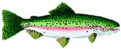
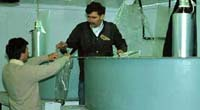
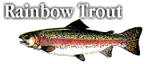
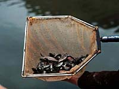
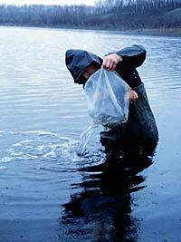
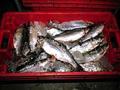
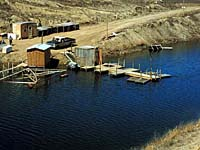
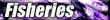
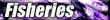

|
|
Farming Rainbow Trout for a Profit

Commercial fishing in Saskatchewan takes on a couple of forms. The commercial operations that are mainly in northern areas of the province catch wild fish, and must market their product through the Freshwater Fish Marketing Corporation (Winnipeg). Transportation of the harvest becomes expensive when one considers the remoteness of many northern areas of Saskatchewan.
Farmed fish, on the other hand, are raised in pens and may be sold privately. Saskatchewan is home to several of these aquaculture stations. Perhaps one of Canada's largest trout farms is a privately owned commercial operation, located in the middle of the prairies, on Lake Diefenbaker. The AgPro Fish Farm is a subsidiary of the Saskatchewan Wheat Pool. Rainbow trout are the specialty of the farm, though they have raised Atlantic Salmon and other species in the past. The over 800 000 fish raised at the farm are destined for markets in eastern Canada, the United States and, more recently, in Pacific Rim countries. Farmed fish are becoming increasingly popular on the market and the amount of these fish farmed has increased significantly over the last decade. Worldwide demand for fish coincides with the increase. Typically, farmed fish can be grown faster than those in the wild. This aspect of aquaculture can only help to meet consumer demands.
|

The AgPro Fish Farm employs over 20 employees during peek seasons. Not only does the farm raise the fish in pens, but the operation also has a complete processing plant. Workers are needed to maintain the farm on a daily basis, which include feeding and maintenenance of the fish, maintenence of pens and machinery, environmental tests and so on. Harvesting and processing requires extra staff to fill the workload (filleters, packers, deboners,...). The business has grown significantly since it was started in the late 1980's.
|
What species of fish is raised at the farm?

Rainbow Trout. More specifically, sterile, triploid (genetic manipulation of sex chromosomes of the embryo to result in only female) rainbow trout, Kamloops subspecies (so chosen because of its ability to attain a marketable size in a short time period.) Female trout are raised because of their appearance; as males mature they develop a 'hook-like' jaw which is not a positive selling feature.
|
Consumer demand for this type of freshwater fish, as well as hardiness of the species, has influenced the type of fish raised at the farm. Rainbow trout (Oncorhynchus mykiss) grow rapidly. Rainbow trout can be found in both salt and freshwater. The species can withstand a temperature range of 0 - 27 degrees Celsius. The fish eat a variety of organisms present in most dugouts and ponds. Their diet in the wild includes small crustaceans, insects and insect larvae. The most important food organism is the freshwater shrimp. It is responsible for the development of the orange-pink color in the flesh of the trout, in addition to stimulating a rapid rate of growth.
The recent development of intensive aquaculture has led to formulated diets to provide the trout with their dietary requirements. The AgPro Fish Farm uses food in the form of feed pellets of high grade protein and consisting of the following ingredients:
- approximately 45% protein
- 18% fat
- 1% fibre
- 10% ash
- 8% moisture
- vitamins A, D3, E
- minerals calcium, phosphorus and sodium (added)
- a pigment is added to increase the pink color of the flesh so desired by the consumer.
One of the most important criteria of quality is the color of the meat. The natural pink color of rainbow trout flesh is a result of the consumption of pigments known as carotenoids. One or two synthetic pigments (astaxanthin alone or in combination with canthaxanthin ) are added to fish food in commercial aquaculture operations to intensify the color of the flesh.
Rainbow trout are attained at the 7.5 to 10 cm fingerling size from fish hatcheries. The fish are raised at the farm for almost three years. The ideal weight for market is 6 to 8 pounds. Computerization of the feeding system is in place to reduce the time to produce the fish to their market weight; by precise control of the feeding times, fish eat when hungry and feed is not wasted. With this state-of-the-art equipment, the farm hopes to decrease the time of raising the fish from fingerlings to market size to less than three years. The computerized system would streamline the operation and utilize the correct amount of feed for the 'livestock'.
How are they raised?

The fish are stocked and kept in off-shore pens suspended by floats. The pens are suspended over 50 metres of water. The nets are 15 metres feet square by 15 metres deep. Each pen in home to from 20 000 to 100 000 rainbow trout, depending on their size. Net mesh size varies from 1 cm to 4 cm, depending on the size of the fish. The large number of fish are broken up as the fish grow larger. Net size is important to maintain a good flow of water through the pens. The flow of water is important for maintaining a proper oxygen content for the fish.
Air is pumped into the pens to upgrade oxygen levels. The fish are surface fed through a pressurized tube running from the shore. Fish burps are common...oil slicks on the surface of the water due to the high oil content of the food pellets.
The fish food costs over 1 million dollars per year and is currently shipped in from British Columbia. The AgPro Fish Farm is looking at ways to produce the feed locally, using some of the crops grown locally. The 100 kilogram bags are consumed at a rapid rate and storage of the many bags required can be a problem.
|
But, how clean is the operation?

Pens are cleaned on a regular basis and part of the job of several employees at the fish farm. Imagine, donning scuba gear to dive with 20 000 good size rainbow trout! Due to the large size of the operation, the area of Diefenbaker Lake where the fish farm is located must meet environmental health standards. The nutrient balance of the lake is of concern. When over 100 000 fish and their waste products are added to an ecosystem, there are bound to be some changes. Water quality tests are conducted on a regular basis with no problems as yet. The mountain fed lake is cool and deep which helps to maintain a good supply of fresh water in the area.
Farming does not end when winter settles in; the pens are submerged during freeze over and again in the spring thaw to help prevent damage by ice which forms on the lake. The amount of fish in the pens and aeration helps keep the water from freezing and the fish continue to thrive through the winter months.
|
How are fish processed?

At harvest time, mature fish are scooped up in a net. A crane lifts the net and the fish are transferred to a barge where they are electrocuted. This method of euthanizing the fish prevents the stress of suffocation while in the air. The meat receives a higher grade if the fish are not stressed. During the winter, fish in submersed cages are sucked through a vacuum tube to the processing plant. Winter harvested fish traditionally bring in a better price.
The AgPro Fish Farm has its own government inspected processing facility on site. Almost all processing is done through automation. The machines used at the AgPRo fish farm are state-of-the-art and capable of increasing quality and quantity of production.
Fish are packed on ice and taken to the plant. Whole fish are gutted by a gutting machine. If further processing is required, then the plant is equiped to handle the demand. The heads are removed using a head-cutting machine. Tiny bones are removed from fillets with a pin-boner. A filleting machine uses a mechanical eye to separate the fish in two and remove the ribs. Scales are mechanical. Once fish are processed, the fillets are packed on ice in tubs, weighed, labelled and ready for shipping. Over 1 million kg of fish are expected to be sold to markets in the next few years. Any leftover parts are used. Fertilizer is just one of the products made from the leftovers. The processing plant is in operation a few days each week that the fish are harvested.
|
Can I see this place myself?

There is nothing more exciting to see 20 000 rainbow trout of large size schooling in the pens. They can be 'fed-by-hand' and a few 'wild' trout that have escaped the pens can be found just on the outside, eager to grab any food that may fall their way. The farm is a choice location for school field trips, tourist spot or just an interesting way to spend a day. The AgPro Fish Farm is located near Lucky Lake, Saskatchewan.
|
|
 
